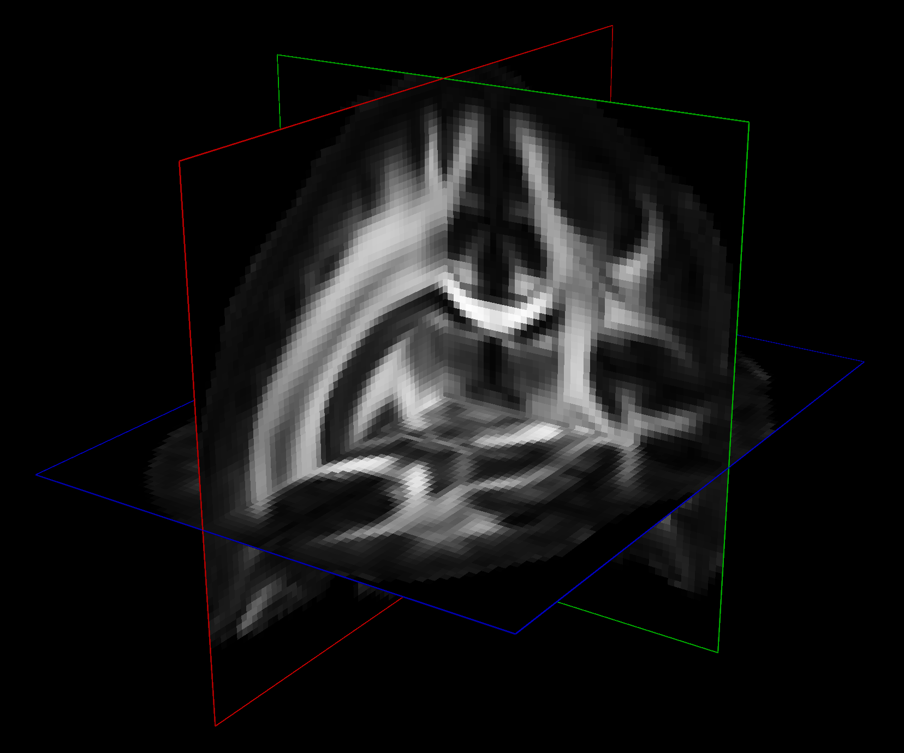
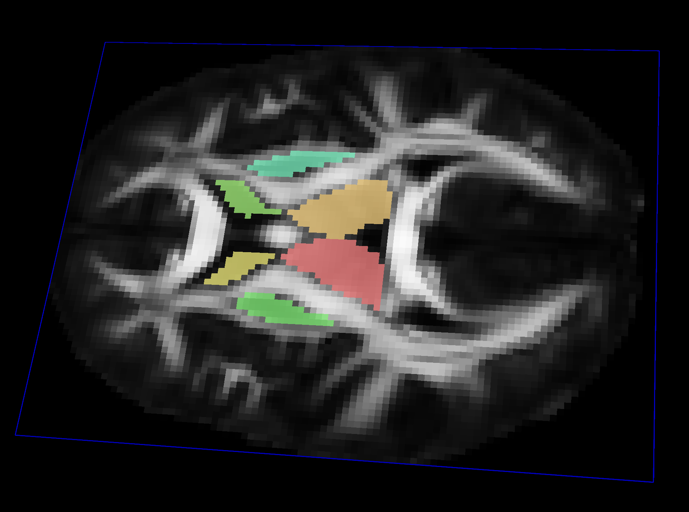
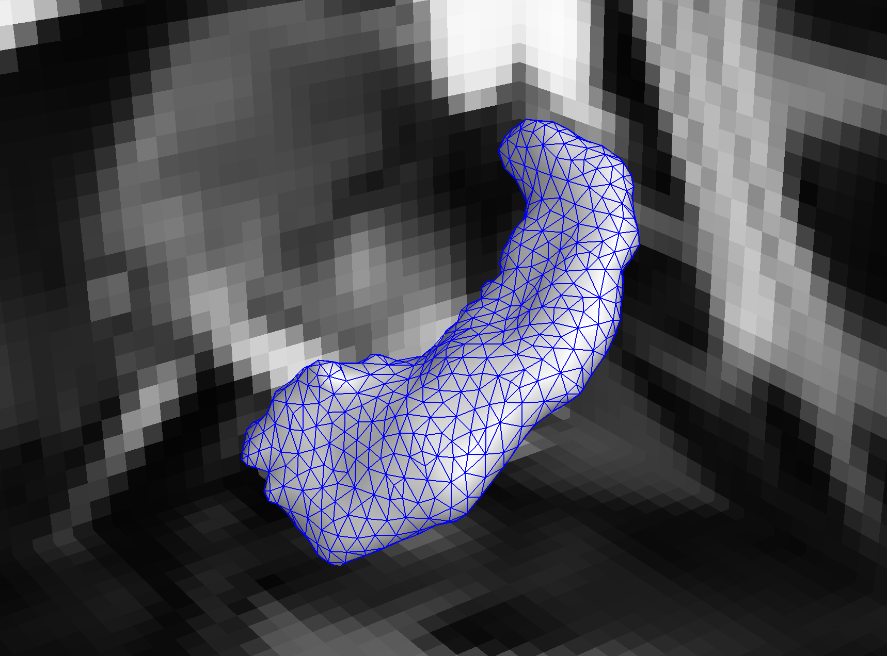
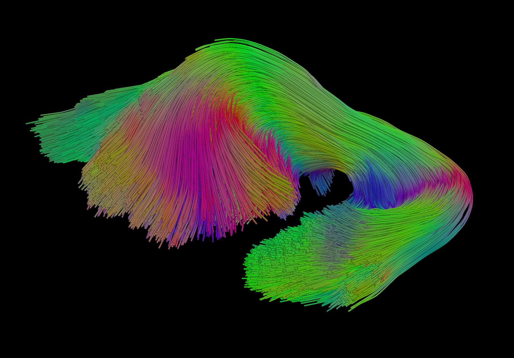
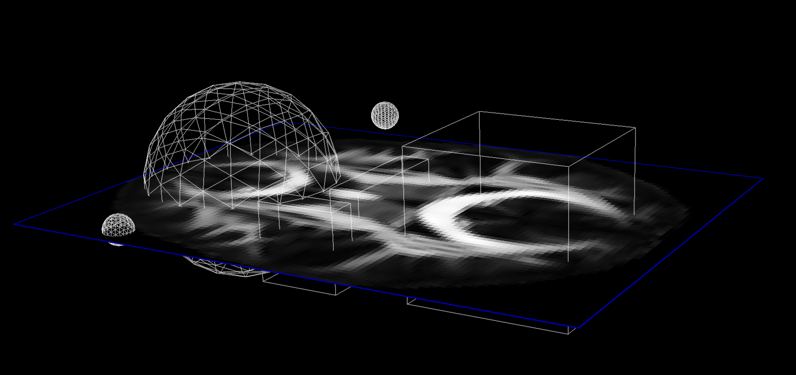
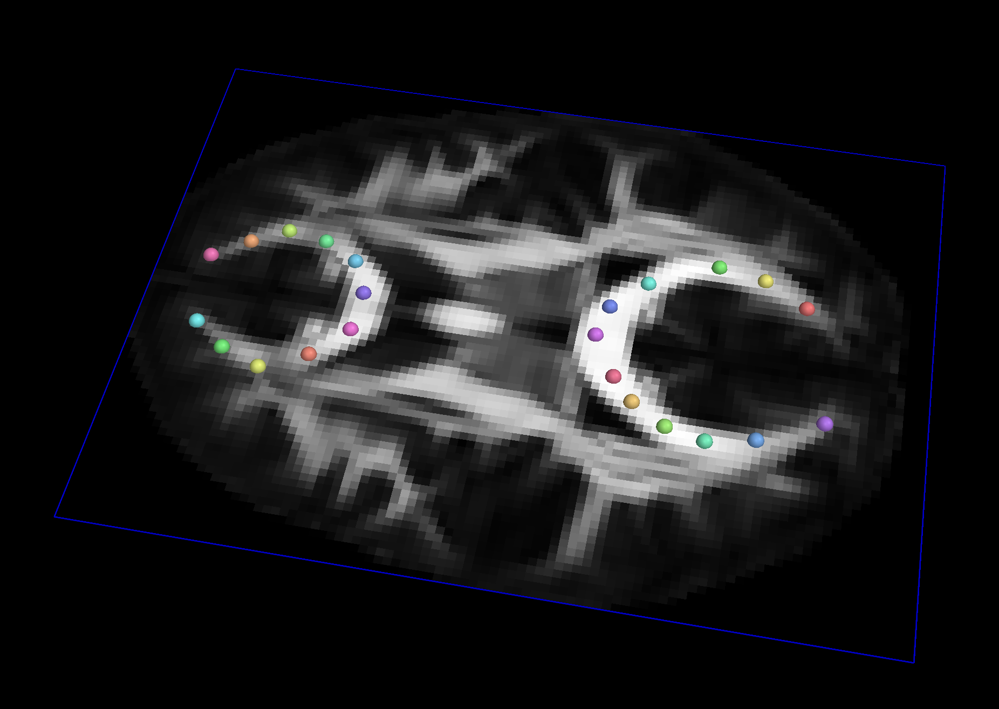

What types of datasets work with QIT
QIT is primarily designed to work with imaging data, but it also supports a variety of other datatypes that are useful in analyzing imaging data, such surfaces, curves, vectors, spatial transformations, etc. This page describes these various datatypes, how they’re used, and what file formats are supported.
Volume

Volume is a dataset representing imaging data, whether that data is planar (2D) or volumetric (3D). If you have worked with images before, this will be familiar; however, there are several important differences. Most images encountered day-to-day are essentially a grid of pixels that each have a color, typically encoded by red, green, and blue intensities. By contrast, a Volume represents a 3D dimensional grid of voxels (volume elements) that each have an associated Vect. Sometimes this type of vector-valued volume is called a 4D image, where the fourth dimension identifies an entry of the vector at each voxel. Another way that a Volume is different from a typical image is that it has a spatial coordinate system. Most images have no need to store a pixel’s size or the position of an image in space, but these can be important in scientific imaging. Therefore, we include a coordinate system that to describe the spatial layout of the 3D grid represented by each Volume, which includes:
- a vector indicating the position in space for the first voxel
- a quaternion indicating the rotation of the grid
- a vector indicating the size of the voxel
These provide a connection between voxels on the 3D grid and their positions in 3D space (world coordinates). This is crucially important when analyzing volumetric data in conjunction with geometric objects and other volumes, which may have a different underlying 3D grid. Because the coordinate system includes a rotation, it can be quite confusing to discuss voxels and their world coordinates. To help clarify this, we have adopted the naming conventions for voxels and their positions. Each voxel is identified by a Sample object that stores three indices (i,j,k) that correspond to a location on the 3D grid. The position of each voxel is represented by a Vect that stores (x,y,z) in world coordinates.
Supported file formats:
- Input: NIfTI, VTK, ImageIO, Text, UC Davis Stack
- Output: NIfTI, VTK, ImageIO, Text, UC Davis Stack, NRRD
Mask

Mask is a dataset for storing volumetric labels. A Mask has a similar voxel grid structure to a Volume, except the value stored at each voxel is instead an Integer label. These labels are meant to discriminate between foreground and background voxels, and well as to indicate multiple labels for region-of-interest analysis. Mask and Volume datasets can look similar when saved to disk, but they get treated very differently in QIT. For example, when rendering an image slice, a Mask will use a discrete colormap with different values for each label, while a Volume will use a scalar colormap with continuously changing values assigned to pixel intensities. Furthermore, QIT allows you to manually draw on masks, and some modules require data to be loaded as a Mask. However, it you accidentally load a Mask as a Volume, there are menu items for converting between the two.
Supported file formats:
- same as
Volume
Mesh

Mesh is a dataset representing a 3D triangulated surface. Each Mesh consists of a collection of Vertex objects, representing the vertices of the triangles, and a collection of Face objects representing the triangles themselves. The 3D position (and any other desired attribute) of the vertex is stored as named Vect objects associated with each Vertex. The only required attribute is coord, which represents the 3D position of the Vertex; otherwise, attributes may have any name and Vect dimension. The triangles are expected to form a manifold surface mesh, meaning they are locally flat and that each edge is shared by at most two faces. The order of Vertex objects in each face reflects the orientation, and the edges of coincident faces should have opposite directions. A mesh may have many disconnected components or even form a “triangle soup” of unconnected Face objects. They are commonly used to represent boundaries between structures, level sets, and glyphs. They are especially useful for illustrating 3D structures that are difficult to visualize from volumetric slices.
Supported file formats:
-
Input: VTK, GeomView OFF, Freesurfer, MINC OBJ, Freesurfer Mesh
-
Output: VTK, STL, GeomView OFF, Freesurfer, MINC OBJ, Lightwave OBJ
Curves

Curves is a dataset representing 3D space curves. A Curves object consists of many Curve objects, which are each a sequence of points and line segments connecting them (also known as a simple polygonal chain or poly-line). Each point along each curve also has named Vect attributes. The only required attribute is coord, which represents the 3D position of the point. There’s no constraint placed on the spacing between points, and the attributes can have any dimension. Typically, they are used to represent streamlines, iso-curves, or manually drawn landmark paths. In particular, tractography produces Curves from diffusion MR volumes and include a variety of diffusion-derived attributes.
Supported file formats:
-
Input: [http://www.vtk.org/VTK/img/file-formats.pdf VTK], [http://mrtrix.readthedocs.io/en/latest/getting_started/image_data.html MRtrix], [http://trackvis.org TrackVis], [http://www.bic.mni.mcgill.ca/users/mishkin/mni_obj_format.pdf MNI OBJ], [http://graphics.stanford.edu/projects/dti/software/pdb_format.html PDB], [http://jdtournier.github.io/mrtrix-0.2/appendix/mrtrix.html MRtrix], Brown VRL, Text
-
Output: [http://www.vtk.org/VTK/img/file-formats.pdf VTK], [http://mrtrix.readthedocs.io/en/latest/getting_started/image_data.html MRtrix], [http://trackvis.org TrackVis], [http://www.bic.mni.mcgill.ca/users/mishkin/mni_obj_format.pdf MNI OBJ], [http://graphics.stanford.edu/projects/dti/software/pdb_format.html PDB], [http://jdtournier.github.io/mrtrix-0.2/appendix/mrtrix.html MRtrix], Brown VRL, Text, CSV
Solids

Solids is a dataset for represent regions of space using simple geometric objects. These are typically used for querying other datatypes. Each Solids is a collection of Sphere and Box objects. Each Sphere has a 3D center and radius, and any point inside theSphere is considered part of the Solids. Each Box is a 3D axis-aligned cuboid with a 3D position and some width, length, and height. Any point inside the Box is considered part of the Solids. Solids objects are useful for querying spatial data, e.g. by selecting objects that are contained or intersect the solid. Because these kinds of queries can be repeated many times, the components of a Solid are kept simple for efficiency.
Supported file formats:
- Input: JSON
- Output: JSON
Vects

Vects is a dataset representing a list of Vect objects. Vect is a
basic vector dataset that represents an array of double floating point
values. This could be 3D positions in space, the intensities of an image,
parameters of some model, etc. This makes a Vect an important building
block for the more complicated datasets described later in this page. Many
Vect operations are supported, including addition, subtraction, scalar
multiplication, dot products, norms, etc. When a Vect represents 3D
spatial quantity, we use a right handed coordinate system when displayed.
There are many uses for collections of vectors, for example, they can
represent spatial landmarks, samples of some function, etc. Because other
datasets consist of Vect objects, Vects is also useful for querying and
communication between more complex datasets. Mathematically, a Vects
consisting of 3D Vects can be described:
Supported file formats:
- Input: Text, CSV, RAW (64-bit floating point binary), Freesurfer Annot, Freesurfer Curv
- Output: Text, CSV, JSON
Table
Table is a dataset representing data organized into rows and named columns. Each column has a name, each row has a unique identifier, and each element in the table is either a String or an empty value null. Each row can be extracted to a Record object, which represents the row’s entries with a key-value mapping. A Table is typically used to store statistical results and lookups that specify the relationship among labels, names, and colors. In practice, the entries can be a mixture of alphabetical and numerical strings.
Supported file formats:
- Input: Text, CSV, [http://www.grahamwideman.com/gw/brain/fs/surfacefileformats.htm Freesurfer Annot]
- Output: Text, CSV, JSON
Matrix
Matrix is a dataset representing a two dimensional array of double floating point values. They are useful for representing linear transforms, graph connectivity, pairwise distances, and implementing algorithms that use linear algebra. Many Matrix operations are supported, including multiplication, determinants, singular value decompositions, eigenvalue decompositions, etc.
Supported file formats:
- Input: Text, CSV, JSON, DTI-TK affine
- Output: Text, CSV, JSON
Affine
Affine is a dataset representing an affine spatial transformation, which is a linear transformation combined with a translation. Besides using them to transform Vects, they can be composed, inverted, orthogonalized, etc. They are most commonly used for linear and rigid-body registration of other datasets. A Matrix can be used as an Affine as well.
Supported file formats:
- same as
Matrix
Deformation
Deformation is a dataset representing arbitrary spatial transformations, that is, a mapping from 3D points to 3D points. The Deformation is can be created from either an Affine or a sampled function stored in a Volume. If a sampled function is used, the Volume representation is interpolated to produce a smooth function. These are typically used for non-linear registration, e.g. for deforming an image to some typical reference image.
Supported file formats:
- same as
Volume - same as
Affine
Dataset
Dataset is a generic type representing any data that doesn’t fit into the above categories. For example, this could be parameters of a statistical model, such as a Gaussian mixture model. For simplicity, these are always saved to JSON. They aren’t used by many modules though.
Supported file formats:
- JSON